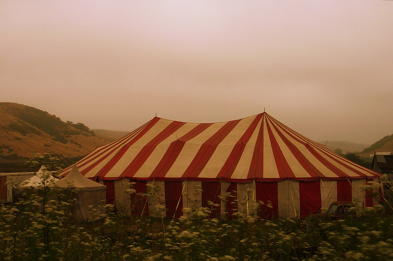

After escaping Loveland, Celestia flew across state lines to Begonia where she knew a distant family friend. In Begonia, Celestia met her family friend at the circus they were residing at. Upon being introduced to the circus life Celestia decided to join and has settled into the circus. Her environment is often noisy, filled with show tunes and different performers practicing their acts. The circus tent is close enough to the city to be a big attraction, but not close enough to the city to hear much of the noise. They’re closer to nature and hear the sounds of bugs at night along with folk songs from the circus troupe. The people around her make noise all day from the time they wake up to when they sleep.
